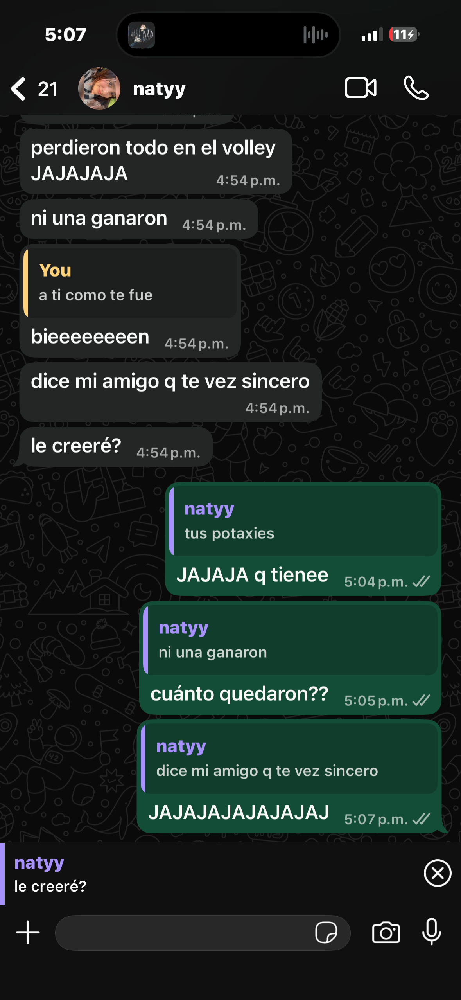
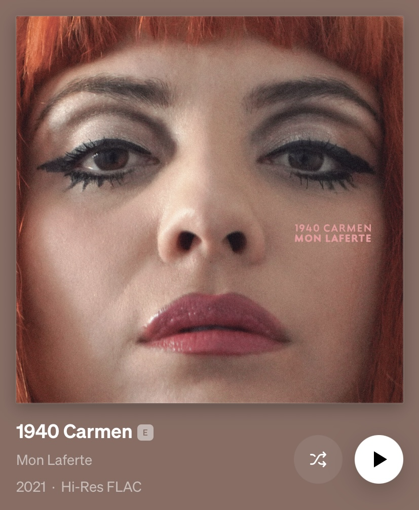

holiiii mi amorcito te amo muchísimo si estás leyendo esto es porque es 24 de noviembre, hoy exactamente hace un año empezamos a ligar jeje,
aun recuerdo como nos encontramos en las carpas donde exponía, ibas con un suetercito azul marino 🐳🐋, recuerdo como te fui a llevar al estacionamiento y te confesé lo que sentía, tuve un valor que es inexplicable hasta el dia de hoy,
espero mientras leas esto te gusten mucho las flores <3 no sabes cuanto te amo y como te quiero hacer feliz como tú me haces a mi,
estuve dudando de que canción elegir hoy jeje, quería que fuera cosas que no te dije porque siento que nos define al inicio, y aunque ya te haya hecho una carta con esa song pronto recibirás otra con esa pero para hoy quise elegir una canción nueva y que ahora mismo estoy escuchando, te la dedico el resto de mi vida,
que bien que encajamos mi amor, jamas me imaginé encontrar mi alma gemela a tan corta edad?m, el amorsote de mi vida, y aunque me sienta mal no me puedo ir a dormir porque quiero que mañana conmemoremos el año de empezar a ligar jeje,
lo estuve pensando mucho que te vas al pueble y creo que es otra de las infinitas razones por las cuales estamos destinados a estar juntos, te imaginas te hubieras ido al pueblo? es otra de las grandes cosas que me hacen pensar que eres un efecto mariposa, el efecto mariposa de mi vida,
ya falta poco para cumplir el año jeje y no sabes que feliz soy, me gusta mucho la ficción y creo que sabrás que me encantan las ideas de viajes en el tiempo, y siempre te tratare de la forma y se que te lo dije hoy pero si mañana mismo se inventaran los viajes en el tiempo me gustaría que pudieras viajar con gusto y decirle a la nub de naty bailon que me de una oportunidad y aunque no sea necesario porque yo jamas me rendiré por ti , se me hace muy bonito,
recuerdas aun como te conté de la invención de morel, todos los días lo pienso y me gustaría vivir cada día de mi vida contigo en bucle, quiero que sepas que puedes ser tu misma conmigo, y jamas recibirás una crítica o juzgacion, y muchas gracias por abrirte conmigo,
me quede pensando mucho como me dijiste hoy que fue un efecto mariposa haber hablado conmigo de eso, y creo que es otra razón de porque somos almas gemelas, como si una fuerza mayor nos uniera y nos impidiera separarnos,
te quiero mucho naty y espero de todo corazón que la naty de aquel november rain 2025 este muy feliz de todo corazón de haberme dado la oportunidad de demostrarle que estoy profundamente enamorado de ella con toda mi alma, espero tu amigo haya tenido razón de que era sincero jeje,

feliz año de habernos dado una oportunidad, nos debemos un pastel si? celebrémoslo con los 8 meses jeje porque es el mes del infinito, como estaré infinitamente enamorado de ti,
te quiere y te ama con toda su alma
-emicici
pdd:
enserio te dedico todo el álbum de 1940 carmen de mon laferte, que hermoso álbum, obvio todas las canciones bonitas mi bonita <3
